Arkusz rozliczania VAT
Informacje ogólne
Dzięki Polskiej Lokalizacji użytkownik Microsoft Dynamics 365 Business Central on‑premises uzyskuje pełną kontrolę nad działaniami związanymi z podatkiem VAT takimi, jak: przekładanie i realizacja niektórych zapisów VAT, zmiana daty obowiązku VAT, pomijanie w ewidencji VAT, zmiana kursu wymiany do przeliczenia VAT z odwrotnego obciążenia. Narzędzie Arkusz rozliczania VAT umożliwia zarządzanie zapisami VAT.
Obsługa
W celu zarządzania zapisami VAT, należy postępować według następujących kroków:
Należy wybrać Działy > Zarzadzanie Finansami > Działania okresowe > VAT > Arkusz rozliczania VAT. W oknie Arkusz rozliczania VAT użytkownik może dokonać czynności wymienione w następnych punktach.
Użytkownik może wybrać zapisy do wyświetlenia poprzez ustawienie filtrów w polach:
Filtr typu – w tym polu należy wybrać typ transakcji spośród dostępnych opcji określając w ten sposób, czy w oknie mają zostać wyświetlone tylko transakcje zakupu lub tylko transakcje sprzedaży, albo oba typy transakcji.
Filtr typu dokumentu – w tym polu można wybrać jeden z dostępnych typów dokumentu, do którego zostaną ograniczone dane wyświetlane w tym oknie. Wybranie opcji pustej oznacza brak filtru w tym polu.
Filtr przełożonego VAT – wybranie opcji Tak spowoduje wyświetlenie wyłącznie zapisów VAT oznaczonych jako przełożony, wybranie opcji Nie spowoduje wyświetlenie wyłącznie zapisów VAT nieoznaczonych jako przełożony. Wybranie opcji pustej oznacza brak filtru w tym polu.
Filtr daty księgowania – w tym polu można wprowadzić datę lub zakres dat, wyznaczających okres, w jakim ma przypadać data księgowania zapisów VAT, które będą wyświetlone w oknie. Puste pole oznacza brak filtru w tym polu.
Filtr daty obowiązku VAT – w tym polu można wprowadzić datę lub zakres dat, wyznaczających okres, w jakim ma przypadać data obowiązku VAT zapisów VAT, które będą wyświetlone w oknie. Puste pole oznacza brak filtru w tym polu.
Filtr daty wpływu dokumentu/sprzedaży – w tym polu można wprowadzić datę lub zakres dat, wyznaczających okres, w jakim ma przypadać data wpływu dokumentu/sprzedaży zapisów VAT, które będą wyświetlone w oknie. Puste pole oznacza brak filtru w tym polu.
Filtr gospodarczej grupy księgowej VAT – w tym polu można wybrać z listy jeden lub więcej kodów Gospodarczej grupy księgowej VAT, z jakimi zostały zaksięgowane transakcje VAT, które będą wyświetlone w oknie. Puste pole oznacza brak filtru w tym polu.
Filtr towarowej grupy księgowej VAT – w tym polu można wybrać z listy jeden lub więcej kodów Towarowej grupy księgowej VAT, z jakimi zostały zaksięgowane transakcje VAT, które będą wyświetlone w oknie. Puste pole oznacza brak filtru w tym polu.
Filtr – pomiń w ewidencji VAT – wybranie opcji Tak spowoduje wyświetlenie wyłącznie zapisów VAT oznaczonych jako pominięte w ewidencji VAT, wybranie opcji Nie spowoduje wyświetlenie wyłącznie zapisów VAT nieoznaczonych jako pominięte w ewidencji VAT. Wybranie opcji pustej oznacza brak filtru w tym polu.
Zamknięty – w tym polu są do wyboru 3 opcje:
Nie – wybór tej opcji powoduje ograniczenie zakresu wyświetlonych zapisów VAT do tych, które są otwarte;
Tak – wybór tej opcji powoduje ograniczenie zakresu wyświetlonych zapisów VAT do tych, które są zamknięte;
Oba – wybór tej opcji powoduje wyświetlenie wszystkich zapisów VAT, niezależnie od tego, czy zostały zamknięte.
Uwaga
Zapisy VAT zostają oznaczone jako zamknięte w wyniku użycia funkcji Oblicz i księguj dekl. VAT.
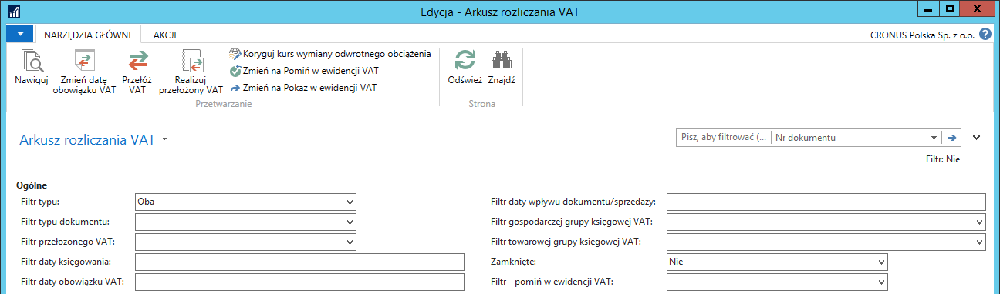
Zapisy VAT w oknie Arkusz rozliczania VAT są pogrupowane według numeru dokumentu. Każdy zapis VAT zawiera:
Nr dokumentu – numer zaksięgowanego dokumentu związanego z zapisem VAT
Nr dokumentu zewnętrznego – numer dokumentu źródłowego związanego z zapisem VAT
Data księgowania – data księgowania dokumentu związanego z zapisem VAT
Typ dokumentu – typ zaksięgowanego dokumentu związanego z zapisem VAT
Data wpływu dokumentu/sprzedaży – data wpływu dokumentu (dla transakcji zakupu) lub data sprzedaży (dla transakcji sprzedaży) w zaksięgowanym dokumencie związanym z zapisem VAT
Data obowiązku VAT – data obowiązku VAT w zaksięgowanym dokumencie związanym z zapisem VAT
Przełożony VAT – jeśli pole jest zaznaczone, kwota podstawy VAT i kwota VAT z transakcji są umieszczone w polach Podstawa przełożonego VAT i Kwota przełożonego VAT, zamiast w polach Podstawa VAT i Kwota VAT. Kwota przełożonego podatku VAT może być zaksięgowana na inne konto księgi głównej niż standardowe konto do księgowania VAT (konta wybrane w polach Konto przełoż. należnego VAT i Konto przełoż. naliczonego VAT w oknie Ustawienia księgowe VAT).
Pomiń w ewidencji VAT – jeśli pole jest zaznaczone, zapis VAT nie zostanie przekazany do pliku JPK_VAT, a w narzędziach do rozliczania VAT może zostać wykluczony poprzez ustawienie właściwego filtru
VAT niezrealizowany – w polu wykazana jest kwota podatku VAT, która w danym zapisie oczekuje na realizację (rozliczenie należności lub zobowiązania z płatnością)
Gosp. grupa księgowa VAT – kod Gospodarczej grupy księgowej VAT w zaksięgowanym dokumencie związanym z zapisem VAT
Tow. grupa księgowa VAT– kod Towarowej grupy księgowej VAT w zaksięgowanym dokumencie związanym z zapisem VAT
Typ – typ transakcji związanej z zapisem VAT: Zakup lub Sprzedaż.
Podstawa VAT – kwota podstawy do kalkulacji podatku VAT (podlegającego odliczeniu w przypadku zakupu) z zaksięgowanego dokumentu związanego z zapisem. Kwota jest zerowa w przypadku, gdy zapis VAT został oznaczony jako Przełożony VAT.
Kwota VAT – kwota podatku VAT z zaksięgowanego dokumentu związanego z zapisem. Kwota jest zerowa w przypadku, gdy zapis VAT został oznaczony jako Przełożony VAT.
Podstawa przełożonego VAT – kwota podstawy do kalkulacji przełożonego podatku VAT z zaksięgowanego dokumentu związanego z zapisem. Kwota jest niezerowa w przypadku, gdy zapis VAT został oznaczony jako Przełożony VAT.
Kwota przełożonego VAT – kwota przełożonego podatku VAT z zaksięgowanego dokumentu związanego z zapisem. Kwota jest niezerowa w przypadku, gdy zapis VAT został oznaczony jako Przełożony VAT.
Podstawa VAT (nie do odliczenia) – kwota podstawy do kalkulacji podatku VAT niepodlegającego odliczeniu z zaksięgowanego dokumentu związanego z zapisem.
Kwota VAT (nie do odliczenia) – kwota podatku VAT niepodlegającego odliczeniu z zaksięgowanego dokumentu związanego z zapisem.
Zamknięte – pole jest zaznaczone w tych zapisach VAT, które zostały zamknięte przy użyciu funkcji Oblicz i księguj dekl. VAT.
Typ kalkulacji VAT – w polu prezentowany jest typ kalkulacji VAT zdefiniowany w Ustawieniach księgowych VAT dla kombinacji Gosp. grupy księgowej VAT i Tow. grupy księgowej VAT użytej w danym zapisie VAT.
Inny kurs dla odwrotnego obciążenia – pole zaznaczane jest automatycznie w zapisach VAT z Typem kalkulacji VAT: Odwrotne obciążenie, utworzonych na podstawie faktury w obcej walucie, jeśli zastosowane zostały różne kursy wymiany dla kwoty faktury i kwoty odwrotnego obciążenia, gdy nie była włączona opcja automatycznego księgowania różnicy w kwocie odwrotnego obciążenia.
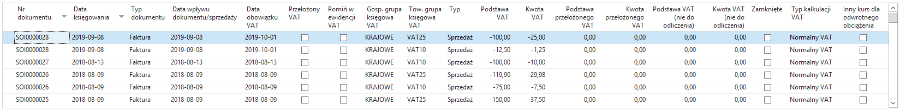
Na dole okna Arkusz rozliczania VAT są pola sumujące kwoty z zapisów VAT wyfiltrowanych w oknie arkusza:
Podstawa VAT (Normalny) – suma kwot w polu Podstawa VAT wyfiltrowanych zapisów VAT.
Kwota VAT (Normalny) – suma kwot w polu Kwota VAT wyfiltrowanych zapisów VAT.
Podstawa VAT (Przełożony) – suma kwot w polu Podstawa przełożonego VAT wyfiltrowanych zapisów VAT.
Kwota VAT (Przełożony) – suma kwot w polu Kwota przełożonego VAT wyfiltrowanych zapisów VAT.
Podstawa VAT (Nie do odliczenia) – suma kwot w polu Podstawa VAT (nie do odliczenia) wyfiltrowanych zapisów VAT.
Kwota VAT (Nie do odliczenia) – suma kwot w polu Kwota VAT (nie do odliczenia) wyfiltrowanych zapisów VAT.
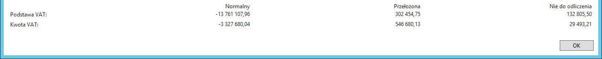
W celu zmiany daty obowiązku VAT w wybranym zapisie VAT, należy postępować według następujących kroków:
W oknie Arkusz rozliczania VAT należy zaznaczyć wiersz, w którym data obowiązku VAT ma zostać zmieniona i wybrać Zmień datę obowiązku VAT.
W oknie Zmień datę obowiązku VAT, które się otworzy, należy uzupełnić dwa pola z datami (pola są domyślnie uzupełnione datą roboczą).
Data księgowania – zmiana daty obowiązku VAT faktycznie dokonywana jest jako wyksięgowanie zapisu ze starą datą obowiązku VAT i zaksięgowanie zapisu z nową datą obowiązku VAT. Data księgowania wprowadzona w tym polu będzie użyta jako data księgowania zmiany daty obowiązku VAT.
Data obowiązku VAT – w tym polu należy wprowadzić nową datę obowiązku VAT.
Należy wybrać OK w celu wykonania skryptu.
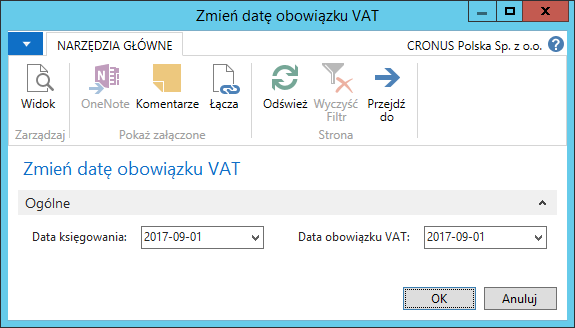
- Rezultatem zmiany daty obowiązku VAT są nowe szczegółowe zapisy VAT, które odwracają zapisy ze starą datą obowiązku VAT i tworzą nowe zapisy z nową datą obowiązku VAT, a w efekcie w zapisie VAT zostaje zmieniona data w polu Data obowiązku VAT:
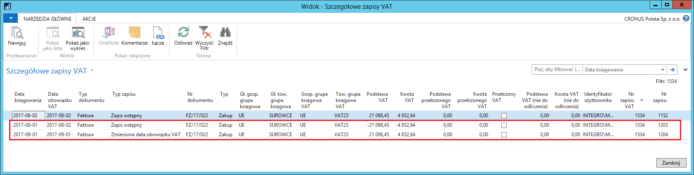
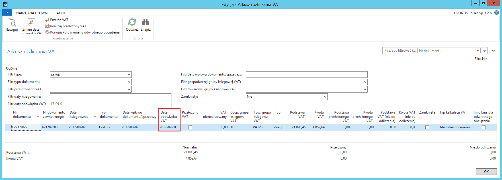
W celu przełożenia podatku VAT w wybranym zapisie VAT, należy postępować według następujących kroków:
W oknie Arkusz rozliczania VAT należy zaznaczyć wiersz, w którym podatek VAT ma zostać przełożony i wybrać Przełóż VAT.
W oknie Przełóż VAT, które się otworzy, należy uzupełnić pole z datą księgowania (pole jest domyślnie uzupełnione datą roboczą).
Data księgowania – przełożenie VAT faktycznie dokonywane jest jako wyksięgowanie zwykłego zapisu i zaksięgowanie zapisu jako przełożony VAT. Data księgowania wprowadzona w tym polu będzie użyta jako data księgowania przełożenia VAT.
Data obowiązku VAT – pole jest nieedytowalne.
Należy wybrać OK w celu wykonania skryptu.
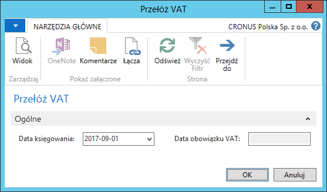
- Rezultatem przełożenia VAT są nowe szczegółowe zapisy VAT, które odwracają zwykłe zapisy VAT i tworzą nowe zapisy z przełożonym podatkiem VAT, a w efekcie w zapisie VAT zostaje wstawiony znacznik w polu Przełożony VAT, a kwoty z pól Podstawa VAT i Kwota VAT zostają przeniesione do pól Podstawa przełożonego VAT i Kwota przełożonego VAT.
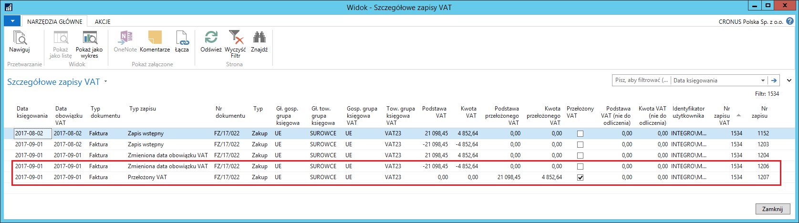
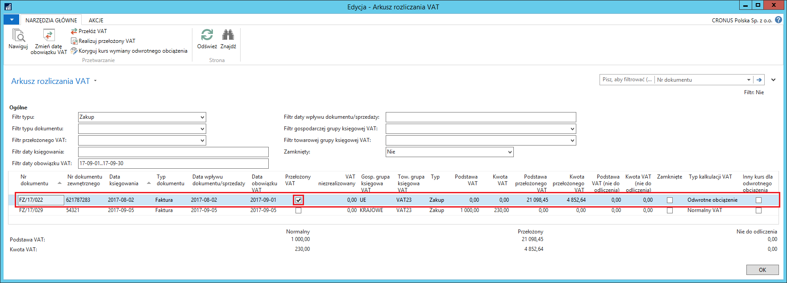
W celu zrealizowania przełożonego podatku VAT w wybranym zapisie VAT, należy postępować według następujących kroków:
W oknie Arkusz rozliczania VAT należy zaznaczyć wiersz, w którym przełożony podatek VAT ma zostać zrealizowany i wybrać Realizuj przełożony VAT.
W oknie Realizuj przełożony VAT które się otworzy, należy uzupełnić 2 pola z datami (pola są domyślnie uzupełnione datą roboczą).
Data księgowania – realizacja przełożonego VAT faktycznie dokonywana jest jako wyksięgowanie zapisu przełożonego VAT i zaksięgowanie zwykłego zapisu VAT z nową datą obowiązku VAT. Data księgowania wprowadzona w tym polu będzie użyta jako data księgowania realizacji podatku VAT.
Data obowiązku VAT – w tym polu należy wprowadzić nową datę obowiązku VAT.
Należy wybrać OK w celu wykonania skryptu.
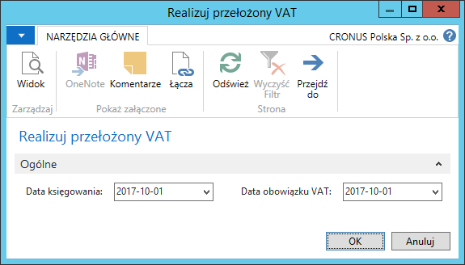
- Rezultatem zrealizowania przełożonego VAT są nowe szczegółowe zapisy VAT, które odwracają zapisy VAT z przełożonym podatkiem VAT i tworzą nowe, zwykłe zapisy VAT. W efekcie w zapisie VAT zostaje zdjęty znacznik z pola Przełożony VAT, kwoty z pól Podstawa przełożonego VAT i Kwota przełożonego VAT zostają przeniesione do pól Podstawa VAT i Kwota VAT i w polu Data obowiązku VAT pojawia się nowa data obowiązku VAT.
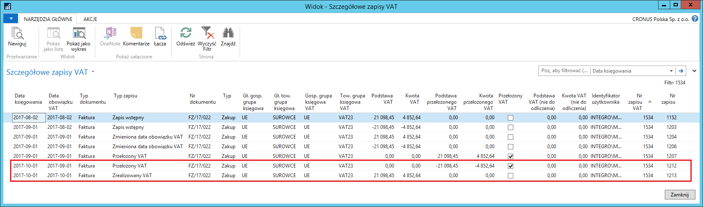
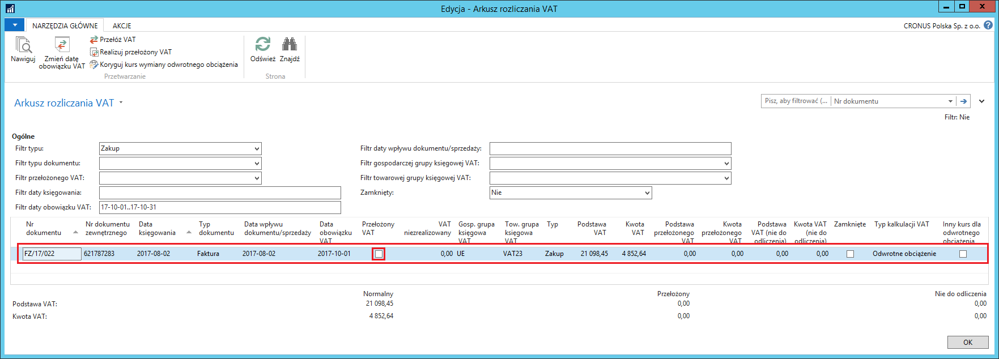
Uwaga
Funkcjonalność Przełożony VAT jest wykorzystywana do oznaczania faktur korygujących sprzedaży jako podpisane przez odbiorcę, dlatego przekładanie podatku VAT i jego realizacja nie są dostępne w oknie Arkusz rozliczania VAT dla dokumentów sprzedaży typu faktura korygująca.
W celu pominięcia wybranego zapisu VAT w ewidencji VAT, należy postępować według następujących kroków:
W oknie Arkusz rozliczania VAT należy zaznaczyć wiersz (lub wiele wierszy), który ma być pominięty w ewidencji VAT i wybrać Zmień na Pomiń w ewidencji VAT.
Rezultatem wykonania tej akcji jest wstawiony znacznik w polu Pomiń w ewidencji VAT we wszystkich wybranych zapisach VAT.
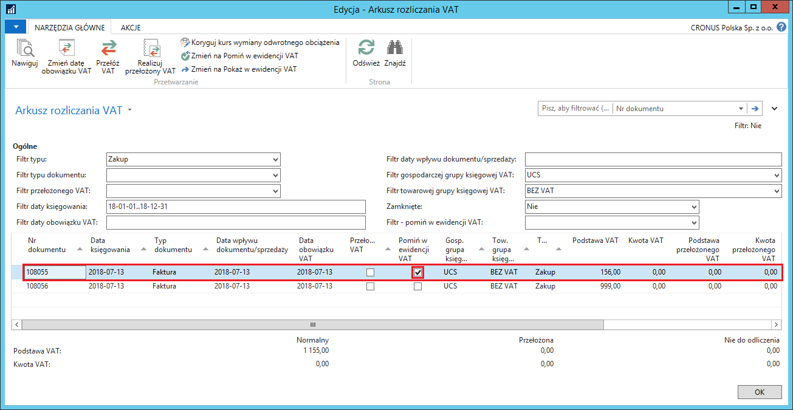
W celu pokazania zapisu VAT, który jest oznaczony jako pominięty w ewidencji VAT, należy postępować według następujących kroków:
W oknie Arkusz rozliczania VAT należy zaznaczyć wiersz (lub wiele wierszy) oznaczony jako pomijany w ewidencji VAT, który ma być pokazany w ewidencji VAT i wybrać Zmień na Pokaż w ewidencji VAT.
Rezultatem wykonania tej akcji jest usunięcie znacznika z pola Pomiń w ewidencji VAT we wszystkich wybranych zapisach VAT.
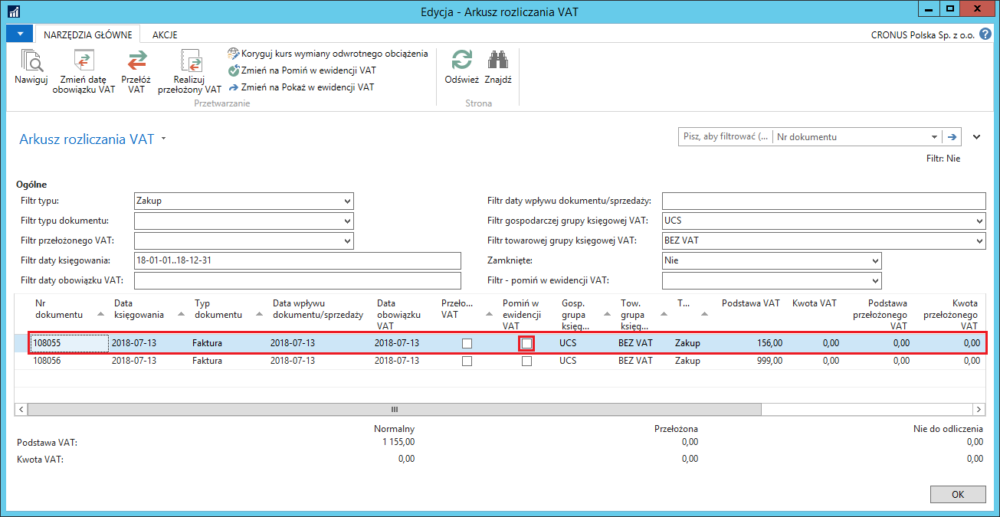